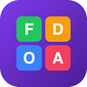
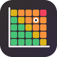
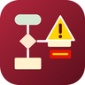
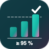
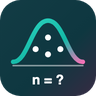
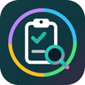
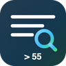

Calidad y seguridad del paciente
Del análisis a la mejora, paso a paso
Apps gratuitas que te guían para analizar tu unidad, dibujar sus procesos, prevenir riesgos, medir, auditar y mejorar. Se usan en el navegador, sin instalar nada, y tus datos se quedan en tu dispositivo.
- Gratis y sin registro
- Funciona en el móvil y sin conexión
- Datos solo en tu dispositivo
- Aprendes mientras lo haces
Ecosistema Calidad
Siete apps hermanas con el mismo aspecto y la misma forma de trabajar. Cada una se usa sola, y además se pasan datos entre ellas.

DAFO · CAMEAnaliza tu servicio o unidad y conviértelo en estrategias y en un plan de acción.Abrir DAFO · CAME ›- FlujogramaEscribe los pasos de un proceso y la app dibuja el diagrama, con sus puntos críticos.Abrir Flujograma ›

AMFEAnticipa qué puede fallar en un proceso, prioriza los riesgos y planifica cómo evitarlos.Abrir AMFE ›
Mapa de RiesgosUne el flujograma y el AMFE en el mapa de riesgos de un proceso, con su documento final.Abrir Mapa de Riesgos ›
IndicadoresDiseña indicadores bien definidos y comprueba que miden lo que de verdad importa.Abrir Indicadores ›
Tamaño MuestralCalcula cuántos casos revisar para que tus resultados sean fiables.Abrir Tamaño Muestral ›
AuditoríasPlanifica, haz e informa una auditoría y sigue las mejoras hasta cerrar el ciclo.Abrir Auditorías ›
Seguridad
Acreditación
Herramientas de apoyo
Utilidades independientes que te ayudan en el trabajo de calidad. No intercambian datos con las demás apps.
- Anonimizador RGPDSeudonimiza o anonimiza hojas de cálculo antes de compartirlas, sin que los datos salgan de tu navegador.Abrir Anonimizador RGPD ›
- Normalizador BibliográficoPega tus referencias y obtenlas en Vancouver, APA y otros estilos, o en BibTeX y RIS.Abrir Normalizador Bibliográfico ›

LegibilidadComprueba si un texto para pacientes se entiende (índice de Flesch-Szigriszt y escala INFLESZ) y te dice qué cambiar.Abrir Legibilidad ›
Cómo encajan
Las apps siguen el ciclo de la mejora continua. Puedes empezar por cualquiera, pero juntas te llevan del análisis a la mejora.
Qué se pasan las apps: los botones «Traer de…»
Si usas las apps en el mismo navegador, una puede traer lo que hiciste en otra con un solo botón. También vale la copia de seguridad (.json) de la otra app, para trabajar en otro dispositivo o en equipo.
- Flujograma
- ← AMFE
- DAFO · CAME
- ← AMFE
- ← Indicadores
- AMFE
- ← Indicadores
- Mapa de Riesgos
- ← AMFE
- ← Flujograma
- ← DAFO
- ← Indicadores
- ← Rondas
- Auditorías
- ← AMFE
- ← Mapa de Riesgos
- ← Rondas
- Rondas de Seguridad
- ← AMFE
- ← Mapa de Riesgos
Los datos se copian de una app a otra dentro de tu navegador: no se envían a ningún servidor. Las herramientas de apoyo no intercambian datos.
La pieza que lo une todo
Guía de Calidad y Seguridad Próximamente
Un libro práctico que recorre el ciclo completo con un mismo caso, explica cada herramienta y te dice en cada momento qué app usar.